1.1 What is COCOMO?
COCOMO (COnstructive COst MOdel) is a screen-oriented, interactive software package that assists in budgetary planning and schedule estimation of a software development project. Through the flexibility of COCOMO, a software project manager (or team leader) can develop a model (or multiple models) of projects in order to identify potential problems in resources, personnel, budgets, and schedules both before and while the potential software package is being developed.
The COCOMO software package is based upon the software cost and schedule estimation model: COnstructive COst MOdel version II (COCOMOII). This is the newly revised version of the original COnstructive COst MOdel (COCOMO) first published by Dr. Barry Boehm in his book Software Engineering Economics, Prentice-Hall (1981), and Ada COCOMO (1989) predecessors. The current model is described in Software Cost Estimation with COCOMOII, (Prentice-Hall) [Boehm et al. 2000]
The primary objectives of the COCOMOII.2000 effort are:
To develop a software cost and schedule estimation model tuned to the life cycle practices of the 21st century.
The full COCOMOII model includes three stages. Stage 1 supports estimation of prototyping or applications composition efforts. Stage 2 supports estimation in the Early Design stage of a project, when less is known about the project’s cost drivers. Stage 3 supports estimation in the Post-Architecture stage of a project.
This version of USC COCOMOII implements stage 3 formulas to estimate the effort, schedule, and cost required to develop a software product. It also provides the breakdown of effort and schedule into software life-cycle phases and activities from both the Waterfall model and the Mbase Model. The Mbase model is fully described in Software Cost Estimation with COCOMOII.
1.1.1 Effort Estimation Equation
Estimate effort with:
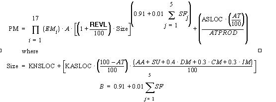(EQ 1-1)
|
Symbol |
Description |
|
Constant, currently calibrated as 2.45 |
|
|
Assessment and assimilation |
|
|
Percentage of components adapted (represents the effort required in understanding software) |
|
|
Percentage of components that are automatically translated |
|
|
Automatic translation productivity |
|
|
Breakage: Percentage of code thrown away due to requirements volatility |
|
|
Percentage of code modified |
|
|
Percentage of design modified |
|
|
Effort Multipliers: RELY, DATA, CPLX, RUSE, DOCU, TIME, STOR, PVOL, ACAP, PCAP, PCON, APEX, PLEX, LTEX, TOOL, SITE |
|
|
Percentage of integration and test modified |
|
|
Size of the adapted component expressed in thousands of adapted source lines of code |
|
|
Size of component expressed in thousands of new source lines of code |
|
|
Person Months of estimated effort |
|
|
Scale Factors: PREC, FLEX, RESL, TEAM, PMAT |
|
|
Software understanding (zero if DM = 0 and CM = 0) |
1.1.2 Schedule Estimation Equation
Determine time to develop (TDEV) with an estimated effort, PM, that excludes the effect of the SCED effort multiplier:
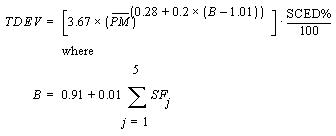 (EQ 1-2)
|
Symbol |
Description |
|
PM |
Person Months of estimated effort from Early Design or Post-Architecture models (excluding the effect of the SCED effort multiplier). |
|
SF |
Scale Factors: PREC, FLEX, RESL, TEAM, PMAT |
|
Time to develop |
|
|
Schedule |
|
|
SCED% |
The compression / expansion percentage in the SCED effort multiplier |
Equation 1-2 defines the exponent, B, used in Equation 1-1. Table 1.1 provides the rating levels for the COCOMOII scale drivers. The selection of scale drivers is based on the rationale that they are a significant source of exponential variation on a project’s effort or productivity variation. Each scale driver has a range of rating levels, from Very Low to Extra High. Each rating level has a weight, W, and the specific value of the weight is called a scale factor. A project's scale factors, Wi, are summed across all of the factors, and used to determine a scale exponent, B, via the following formula:
EQ 1-3)For example, if scale factors with an Extra High rating are each assigned a weight of (0), then a 100 KSLOC project with Extra High ratings for all factors will have SFj = 0, B = 1.01, and a relative effort E = 1001.01 = 105 PM. If scale factors with Very Low rating are each assigned a weight of (5), then a project with Very Low (5) ratings for all factors will have SFj = 5, B = 1.26, and a relative effort E = 331 PM. This represents a large variation, but the increase involved in a one-unit change in one of the factors is only about 4.7%.
| j) |
Very Low |
Low |
Nominal |
High |
Very High |
Extra High |
|
thoroughly unprecedented |
largely unprecedented |
Somewhat unprecedented |
generally familiar |
largely familiar |
thoroughly familiar |
|
|
rigorous |
occasional relaxation |
some relaxation |
general conformity |
some conformity |
general goals |
|
|
little (20%) |
some (40%) |
often (60%) |
Generally (75%) |
mostly (90%) |
full (100%) |
|
|
very difficult interactions |
some difficult interactions |
Basically cooperative interactions |
largely cooperative |
highly cooperative |
seamless |
|
|
Weighted average of "Yes" answers to CMM Maturity Questionnaire |
||||||
|
Table 1.1: Scale Factors for COCOMO.II Early Design and Post-Architecture Models |
||||||
1.1.4 Sizing Methods
SLOC: Lines of Code Counting Rules
In COCOMOII, the logical source statement has been chosen as the standard line of code. Defining a line of code is difficult due to conceptual differences involved in accounting for executable statements and data declarations in different languages. The goal is to measure the amount of intellectual work put into program development, but difficulties arise when trying to define consistent measures across different languages. Breakage due to change of requirements also complicates sizing. To minimize these problems, the Software Engineering Institute (SEI) definition checklist for a logical source statement is used in defining the line of code measure. The Software Engineering Institute (SEI) has developed this checklist as part of a system of definition checklists, report forms and supplemental forms to support measurement definitions [Park 1992] [Goethert et al. 1992].
Figure 1-1 shows a portion of the definition checklist as it is being applied to support the development of the COCOMOII model. Each checkmark in the "Includes" column identifies a particular statement type or attribute included in the definition, and vice-versa for the excludes. Other sections in the definition clarify statement attributes for usage, delivery, functionality, replications and development status. There are also clarifications for language specific statements for ADA, C, C++, CMS-2, COBOL, FORTRAN, JOVIAL and Pascal.
Some changes were made to the line-of-code definition that departs from the default definition provided in [Park 1992]. These changes eliminate categories of software, which are generally small sources of project effort. Not included in the definition are commercial-off-the-shelf software (COTS), government-furnished software (GFS), other products, language support libraries and operating systems, or other commercial libraries. Code generated with source code generators is not included though measurements will be taken with and without generated code to support analysis.
The "COCOMOII line-of-code definition" can be calculated in several ways. One way is to use the software program, Amadeus[Amadeus 1994] [Selby et al. 1991]. Another software program is Code Count, which is ailable from the Center for Software Engineering website under category Tools.
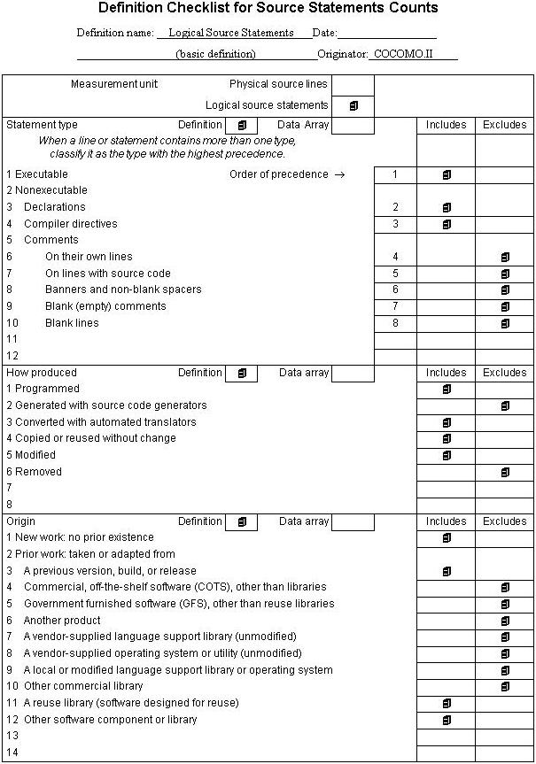
Figure 1-1 Definition Checklist for Source Statements Counts
1.1.5 FP: Counting with Unadjusted Function Points
The function point cost estimation approach is based on the amount of functionality in a software project and a set of individual project factors [Behrens 1983][Kunkler 1985][IFPUG 1994]. Function points are useful estimators since they are based on information that is available early in the project life cycle. A brief summary of function points and their calculation in COCOMOII is as follows.
Function points measure a software project by quantifying the information processing functionality associated with major external data input, output, or file types. Five user function types should be identified as defined in the Table2.
|
Count each unique user data or user control input type that (i) enters the external boundary of the software system being measured and (ii) adds or changes data in a logical internal file. |
|
|
Count each unique user data or control output type that leaves the external boundary of the software system being measured. |
|
|
Count each major logical group of user data or control information in the software system as a logical internal file type. Include each logical file (e.g., each logical group of data) that is generated, used, or maintained by the software system. |
|
|
Files passed or shared between software systems should be counted as external interface file types within each system. |
|
|
Count each unique input-output combination, where an input causes and generates an immediate output, as an external inquiry type. |
Table 2: User Function Types
Each instance of these function types is then classified by complexity level. The complexity levels determine a set of weights, which are applied to their corresponding function counts to determine the Unadjusted Function Points quantity. This is the Function Point sizing metric used by COCOMII. The usual Function Point procedure involves assessing the degree of influence (DI) of fourteen application characteristics on the software project determined according to a rating scale of 0.0 to 0.05 for each characteristic. The 14 ratings are added together, and added to a base level of 0.65 to produce a general characteristics adjustment factor that ranges from 0.65 to 1.35.
Each of these fourteen characteristics, such as distributed functions, performance, and reusability, thus have a maximum of 5% contribution to estimated effort. This is inconsistent with COCOMO experience; thus COCOMO.II uses Unadjusted Function Points for sizing, and applies its reuse factors, cost driver effort multipliers, and exponent scale factors to this sizing quantity.
1.1.6 AAF: Adaptation Adjustment Factors
Adaptation of Existing Code
COCOMO is not only capable of estimating the cost and schedule for a development started from "scratch", but it is also able to estimate the cost and schedule for products that are built upon already existing code. Adaptation considerations have also been incorporated into COCOMO, where an estimate for KSLOC will be calculated. This value will be substituted in place of the SLOC found in the equations already discussed. This adaptation of code utilizes an additional set of equations that are used to calculate the final count on source instructions and related cost and schedule. These equations use the following values as components:
These components are brought together in Figure 1-6. The AAF is the adaptation adjustment factor. The AAF is the calculated degree to which the adapted software will affect overall development.
1.1.7 Effort Multipliers
There are a number of contributing factors to a project’s delivery time and effort. Development productivity was found to be affected by additional factors that were found to fall under the headings: product attributes, platform attributes, personnel attributes, and project attributes.
Product attributes refer to the constraints and requirements placed upon the project to be developed. These included
Platform attributes refer to the limitations placed upon development effort by the hardware and operating system being used to run the project. These limitations are listed below.
Personnel attributes refer to the level of skills that are possessed by the personnel. The skills in question are general professional ability, programming ability, experience with the development environment and familiarity with the project’s domain. These skills are characterized below.
Project attributes refer to the constraints and conditions under which project development takes place. The issues that affect development are:
These 16 factors are incorporated into calculating an estimated effort and schedule. Each of the factors has associated with it up to six ratings. These ratings are very low, low, nominal, high, very high, and extra high. Each rating has a corresponding real number based upon the factor and the degree to which the factor can influence productivity. A rating less than 1 denotes a factor that can decrease the schedule and effort. A rating greater than 1 denotes a factor that extends the schedule or effort. Lastly, a rating equal to 1 does not extend nor decrease the schedule and effort (this rating is called nominal).
These 16 factors (or effort multipliers) are incorporated into the schedule and effort estimation formulas by multiplying them together (see Figure 1-7 for the COCOMO dialog box). The numerical value of the ith adjustment factor (there are 16 of them) is called EMi and their product is called the adjustment factor or EAF. The actual effort, PMtotal is the product of the nominal effort times the EAF.
In addition to the 16 EAF factors there are two user defined factors named USR1 and USR2. Their initial values are all set to 1. They may be redefined by using the Parameters-User Defined EAF menu item.
A final effort multiplier, Required Development Schedule (SCED) is treated separately as it operates at the overall project level rather than potentially varying from module to module.
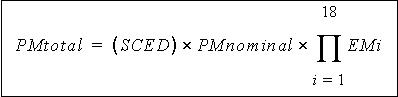
FIGURE 1-2 Estimate Development Effort
This software is a stand-alone software system intended for a single user. The software is user interactive in that it attempts to interface well with a user's needs, using extensive mouse interaction wherever possible.
On the screen in Figure 1-3 is the CLEF (Component Level Estimation Form). This is where all of the entered information will be displayed. The top of the screen shows all of the subfunctions which the user may call. The choices appear in pop down menus according to the major headings of Project, Model, and Phase.
In order to efficiently use COCOMO, you must become familiar with the Component Level Estimating Form (CLEF). The different sections that are to be discussed have been given a corresponding number. These sections are given a descriptive label as a point of reference as well as a summary of their contents and functions.
The sections found in Figure 1-3 and their descriptions are as follows:
1. Main Menu bar - This area contains the menu selection of the main functions of COCOMO. These selections are File, View, Edit, Parameters, Calibrate, Phase Distribution and Help. File, View, Edit, Parameters, Calibrate, and Phase Distribution are discussed in chapters 2, 3, 4, 5, and 6 respectively. Help is the selection used to receive on-line assistance with the available functions.
2. Tool bar - This area contains image buttons like other windows applications for New Project, Open Project, Save Project, Delete Module, Copy & Paste, Insert clipboard content, Insert a module, and About functions.
3. Project Name - This editable field displays the name of the currently displayed project. To edit the name click twice upon this field and proceed to edit name. Upon completion of editing press the "Return" key. The Default name of a new project is "<sample>".
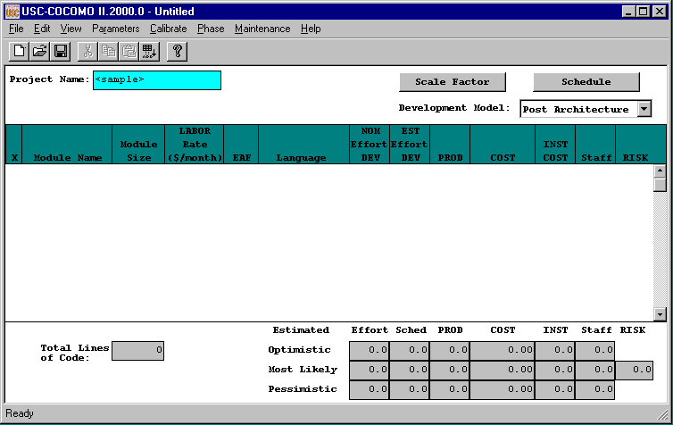
FIGURE 1-3 COCOMO CLEF
4. X - This column is reserved for identifying a module. Pressing upon this field for a given module will mark the desired module. Marking is denoted by an x that appears in this column. Only one module can be marked at a time. Modules are marked in order to perform module deletion, cutting, copying or pasting.
5. Module Name Column - This column is used to house the name of each module located in the Module Area. The module name can be changed by clicking twice on the desired module name box and entering the changes into the module name field. Upon completion of editing press "Return".
6. Module Size (SLOC) Column - This column is used to house the SLOC of each module located in the Module Area. The value for SLOC can be computed in one of three ways. One, the value can be entered directly in the SLOC field as shown in Figure 1-4. Two, by using the function point model as shown in Figure 1-5. Three, by using Adaptation Adjustment Factor as shown in Figure 1-6. Upon completion click on OK. There is a limit to the range of input. The inputted value for SLOC must be within the range 0 - 9,999,999. The language of implementation of each module is initially unspecified, but may be set here.
Note - COCOMO is not calibrated for Total SLOC < 2000.
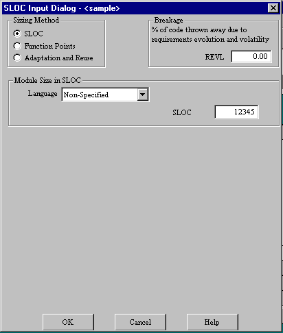
FIGURE 1-4 SLOC Dialog Box - Source Lines of Code (SLOC)
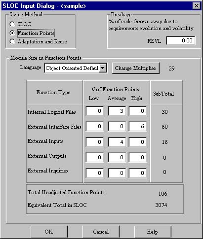
FIGURE 1-5 SLOC Dialog Box - Function Points (FP)
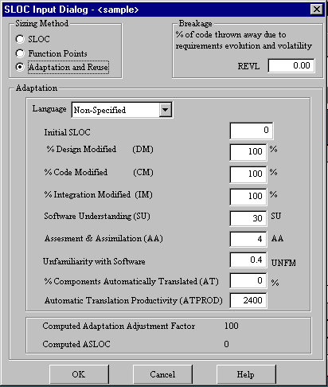
FIGURE 1-6 SLOC Dialog Box - Adaptation Adjustment Factor (AAF)
7. Labor Rate Column - This column contains the amount of money at which a developer working on a particular module would be paid per month. The labor rate can be edited by clicking on the corresponding Labor Rate box and entering the new value via the edit area. The range on labor rate is between $0 and $99,999.
8. Effort Adjustment Factor (EAF) Column - This column displays the product of the cost drivers for each specific module. By clicking on this field a dialog box appears (see Figure 1-7). This box displays all of the cost drivers, inter cost drivers and their current ratings. The cost drivers are divided into the groupings: Product, Platform, Personnel and Project. The inter cost drivers are rated as 0%, 25%, 50%, and 75 %. The ratings for each multiplier can be changed by cycling through the available ratings until the desired rating is displayed. As the cost driver ratings are changed the total product of the cost drivers is displayed in the upper right hand corner of the dialog box along with the module name. The final rating of a cost driver is calculated using this formula for the interpolation.
Final rating = (Next cost driver rating - Current cost driver rating) * Current inter cost driver / 100
COCOMO supports two different models, called Early Design and Post Architecture. The Early Design model is supposed to be used at the earliest phase of a software project. The Post Architecture Model applies once a software architecture has been formulated. In terms of the COCOMO program, the Early Design Model differs from the Post Architecture Model in its use of Effort Adjustment Factors. The Early Design Model considers only seven pre-defined effort adjustment factors (including schedule SCHED). Only six are shown in Figure 1-7. The Post Architecture Model makes use of seventeen pre-defined effort adjustment factors and sixteen of these are shown in Figure 1-8. Each of the models can be specified by selecting it using the button in the upper right portion of the COCOMO main screen.
9. Totals Area - This area houses the calculated results of all of the modules combined. Within this area is the total SLOC count for the module, the total nominal effort (PM), the total nominal productivity (SLOC/PM), the total estimated effort (EST PM), the total estimated productivity (Prod), the total estimated project cost, the estimated cost per instruction, the total estimated FSWP and the total estimated schedule for project completion (see each individual column for more information). The latter six quantities have not only a most likely estimate but also an optimistic estimate (no less than this, 90% of the time) and a pessimistic estimate (no greater than this, 90% of the time).
10. Status bar - This window displays a short definition of the column headings clicked upon and also displays a short description of the result of the last function initiated by the user.
11. Schedule Button - This button displays the Schedule Dialog Box as shown in Figure 1-8.
12. Scale Factor Button - This button displays the Scale Factor Dialog Box as shown in Figure 1-9.
13. Model Selection button - This button displays COCOMOII Post Architecture and Early Design Model. One of the Models can be selected and applied to the project.
14. Risk Column - This column contains the Total risk level for each specific module. By clicking on this field a dialog box appears (see Figure 1-10). This box displays all of the risk levels for the chosen module. The total risk of a module is computed as:
total_risk=schedule_risk+product_risk+personnel_risk+process_risk+platform_risk+reuse_risk;
total risk of a module=total_risk/373.*100.;
For the definitions of schedule risk, product risk, platform risk, personnel risk, process risk, and reuse risk, see [Madachy 1997].
15. Staff (FSWP) Column - This column houses the calculated most likely estimate for the number of full-time developers that would be needed to complete a module in the estimated development time.
16. Instruction Cost Column - This column contains the calculated most likely cost per instruction. This number is calculated from Cost/SLOC in each module.
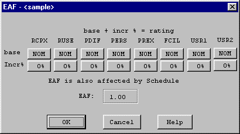
FIGURE 1-7 EAF Dialog Box – Early Design
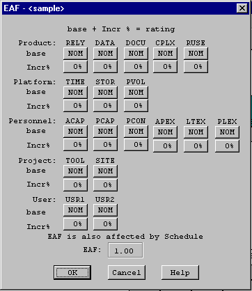
FIGURE 1-8 EAF Dialog Box - Post Architecture
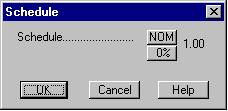
FIGURE 1-9 Schedule Dialog Box
17. Cost Column - This column contains the calculated most likely estimate of the development cost for a particular module.
18. Productivity (PROD) Column - This column contains the calculated result of the module’s individual SLOC divided by the module’s most likely effort estimate.
19. Estimated Person-Month (EST PM) Column - This column holds the module’s most likely effort estimate obtained from multiplying Effort Adjustment Factor (EAF) by Nominal Person Month (NOM PM).
20. Nominal Person-Month (NOM PM) Column - This column holds the module’s most likely effort estimate without incorporating the Effort Adjustment Factors (EAF).
21. Languages - This column indicates the development language for the module. Its value is set by clicking on the SLOC. The initial value is unspecified.
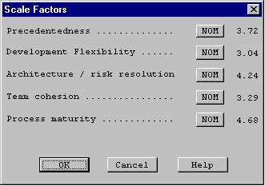
FIGURE 1-10 Scale Factor Dialog Box
FIGURE 1-11 Risk Level Dialog Box
To begin entering a new module, either click on the "Add Module" button on the Tool bar or on the pulldown menu item(Edit|Add Module). At this point, a new module will appear in the CLEF with all values set to their respective defaults. Double click upon the module name field in order to give the new module a name. Upon typing the module name press "Return.". A value for SLOC and Labor rate may also be given by clicking on the respective field and editing appropriately (see Figure 1-12).
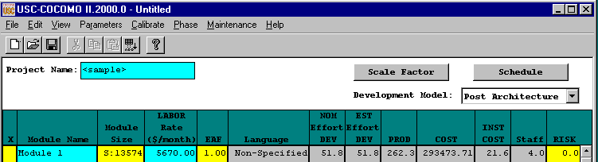
FIGURE 1-12 Create Sample Module and give values to SLOC and Labor Rate
NOTE - In order to change any of the editable fields, just click on the desired field twice and begin editing the field. Upon completing editing, either hit the "Return" key, or click on OK. All of the final results can be found at the bottom of the CLEF in the Totals area (see Figure 1-13).
FIGURE 1-13 Totals area after calculations have been completed
1.4 Obtaining COCOMO
To download COCOMO, you should enter this in a web browser:
http://sunset.usc.edu/COCOMOII/cocomo.htmland scroll down to the section labeled COCOMOII Downloads (Software and Documentation)
or
ftp://ftp.usc.edu/pub/soft_engineering/COCOMOII/ where you will see files:c2000windows.zip, usersman.ps, usersman.pdf, modelman.ps, modelman.pdf